Wetlab
Process/Background
Our project aims to engineer BtSULT to catalyze the sulfonation of lithocholic acid (LCA), potentially improving bile acid metabolism in individuals experiencing debilitating post-cholecystectomy syndrome (PCS). The goal of our in vitro trials was to express, quantify, purify, and evaluate the structural and functional properties of our target sulfotransferase enzyme.
The experimental workflow encompassed plasmid transformation, colony screening, protein expression, purification, and biochemical evaluation. Plasmid constructs were transformed into competent Escherichia coli (E.Coli) BL21 cells and screened using Colony Polymerase Chain Reaction (PCR) to identify colonies containing the desired construct. Positive colonies were subsequently cultured to establish larger-scale expression cultures:
Plasmid Vector and Insert Details: pET_28(+), Kan. R, T7 Primer, lacI operon
Protein concentration was quantified using the Bicinchoninic Acid (BCA) Assay, while protein composition and apparent molecular weight were evaluated using Coomassie Brilliant Blue staining following sodium dodecyl sulfate– Polyacrylamide Gel Electrophoresis (SDS-PAGE).
Avg. Purified Sample Concentration (under non-conflicting growth conditions): 238.759µg/mL (σ = 32.558µg/mL) (Std. Curve R2 ≅ 0.95)
Protein expression was induced using isopropyl β-D-1-thiogalactopyranoside (IPTG). Skim milk was also investigated as an alternative or supplementary expression-induction strategy deriving from necessity. Following expression, crude intracellular materials were harvested and lysed to recover the protein-containing fraction. The target protein was then isolated through His-tag affinity purification.
Cell lysis via B-PER™ Reagent(Non-ionic 20 mM Tris•HCl buffer at pH 7.5), Protein Purification via His-Spin Protein Miniprep Nickel-charged His-Affinity Gel [IMAC] (Zymo P2002)
Wet Lab
Laboratory experimentation is an essential pillar in synthetic biology for testing the real-world behavior of designed biological parts and systems. Our wet lab workflow primarily involves completing robust assays to quantify LCA sulfation activity of the reengineered BtSULT enzyme.
Bacterial Transformation and Host Expression
Transforming BL21 Cells
BL21 E. coli cells acted as the host for re-engineered BtSULT transformation. We elected the pET_28a(+) backbone as a vector to hold our gene insert for convenience of the T7 promoter region. This promoter region is highly transcribed by abundant T7 RNA polymerase in BL21 cells, focusing the cells' resources on creating an abundance of recombinant protein. We also used the selective antibiotic kanamycin to limit streaked bacterial cultures and other contaminants from growing without the included resistance gene (Kan. R).

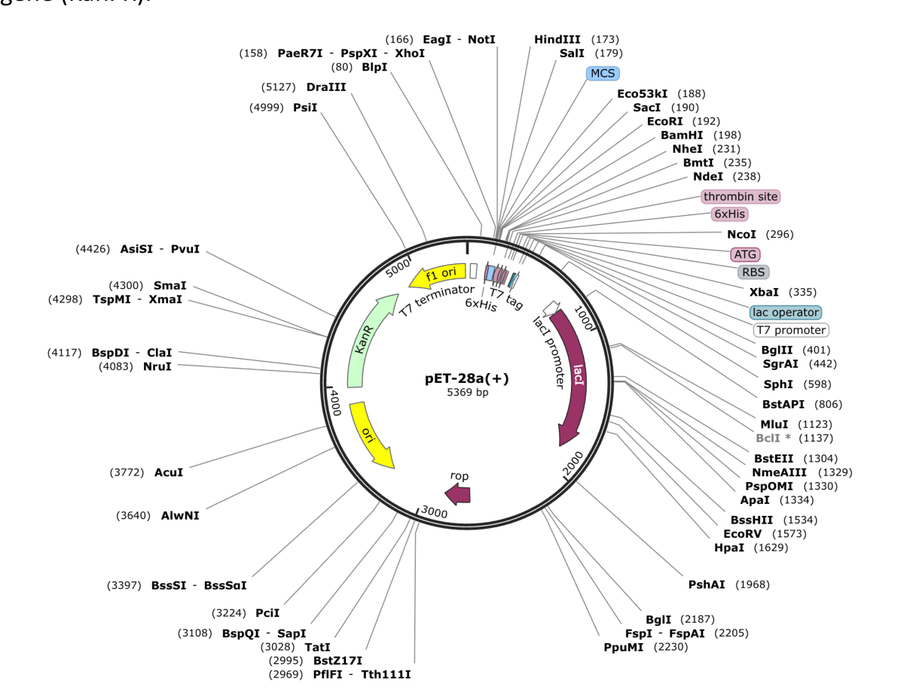
Bacterial Transformation
Bacterial transformation is a process in which foreign DNA is introduced into bacterial cells, leading to new genetic traits being expressed by the bacteria host. By having E-coli BL21 bacterial cells uptake plasmid DNA, we were able to produce our desired protein.
A. Materials
● BtSULT Plasmid DNA
● SulFlux Plasmid DNA
● BL21 culture tubes
● 37°C Bacterial shaker, at 200 xg
● 42°C Water bath
● Microplate reader
● Super Optimal with Catabolite repression Broth (SOC)
● Microfuge tubes
● LB agar plates treated with Kanamycin
● 96-well plate (transparent) B. Procedure
1. Thaw the BL-21 competent E. coli cells on wet ice
2. Pipette 100 uL of bacterial culture (at OD of ≥5) into a labelled microfuge tube (initials, BL21 + BtSULT, date)
3. Add 100 ng of plasmid DNA to each microfuge tube, and mix by gently flicking the tube. Do not resuspend or vortex, as it will lyse the cells.
4. Incubate the microfuge tubes of bacteria and plasmid on ice for at least 30 minutes.
5. Heat-shock the microfuge tube in a water bath at 42°C for 45 seconds, then immediately place the tube on ice for 2 minutes.
6. Add the cells to a bacteria culture tube with 900 uL of room temperature LB broth, closing the cap lightly to allow airflow (1:10 dilution)
7. Put the culture into the bacterial shaker, set to 200 XG, 37°C for 30-60 minutes.
8. Add 200 uL of the recovered cells to the LB agar plate treated with kanamycin.
i. 1,000 uL culture = 5 plates, containing 200 uL each
9. Use a sterile L-spreader to distribute the bacterial cells evenly.
10. Put the plate into the 37°C bacterial incubator for 24-48 hours.
11. Using a sterile loop, pick one large, well-isolated colony from each plate, and streak it onto a fresh plate
12. Put the fresh plate into the 37°C bacterial incubator for 24-48 hours
13. Using a sterile loop, pick up one large, well-isolated colony from the fresh plate and place it in a 15 mL conical tube. Then add 5 mL of LB broth + kanamycin.

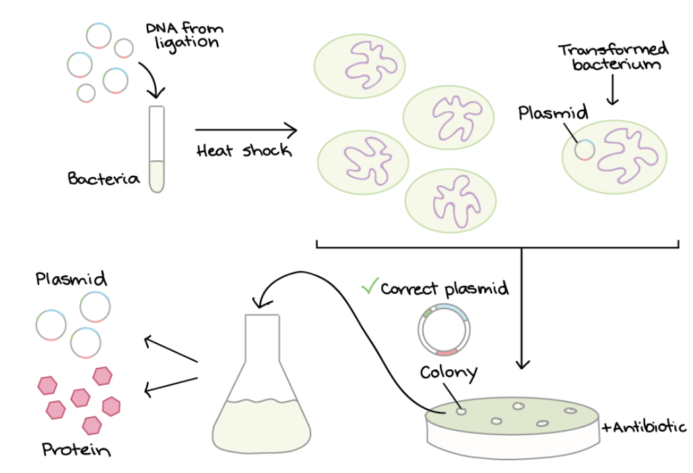
Colony PCR
Grown cultures were then further screened for containing gene inserts by Colony PCR. Primers for the T7 promoter were used to identify the presence of the gene. Colonies were evaluated using band size relative to a 1kB ladder, since primers that sit in the vector backbone produce a baseline-sized DNA band if the gene insert is missing, and a larger band that includes the insert if cloning succeeded.

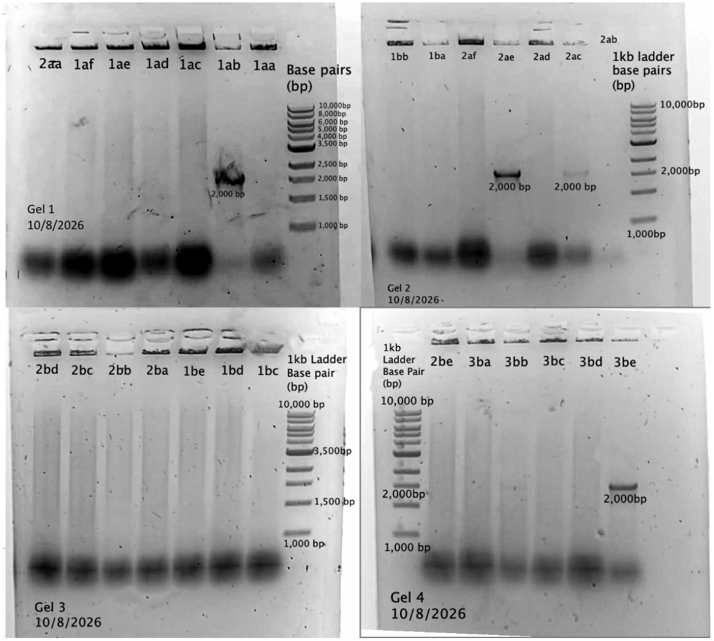
Purpose: Polymerase Chain Reaction replicating DNA samples from transformed BL21 colonies using temperature to separate DNA and control Taq polymerase activity. Includes denaturing DNA into two single strands, primer annealing, and taq DNA extension.
Materials
● DreamTaq 2X Master Mix
● T7 Primers
● nuclease-free water
● bacterial plates with colonies
● sterile pipette tips
Procedure:
1. Add 25 uL of DreamTaq 2X Master Mix solution to two 2 mL microfuge tubes each
2. Designate one microfuge tube as BtSULT and one as SULTFLUX
3. Add 2 uL of SulFlux T7 primers and reverse primers to each tube
4. Add enough nuclease-free water to each tube to bring the total volume to 40 uL (should be 11 uL).
5. Split each sample tube in half.
6. Using a sterile pipette tip or toothpick, pick up one well-isolated colony from the desired plate
7. Swirl the tip with bacteria into each respective PCR tube
a. Optionally, streak a fresh plate using the same tip to create a replica culture.
8. Cycling temperatures should be at:
a. 95C - 3 min, 1 cycle
b. 95C - 30 sec, 32 cycle
c. 55C - 30 sec, 32 cycle
d. 72C - 1 min, 32 cycle
e. 72C - 5 min, 1 cycle
f. 12C - infinite, 1 cycle

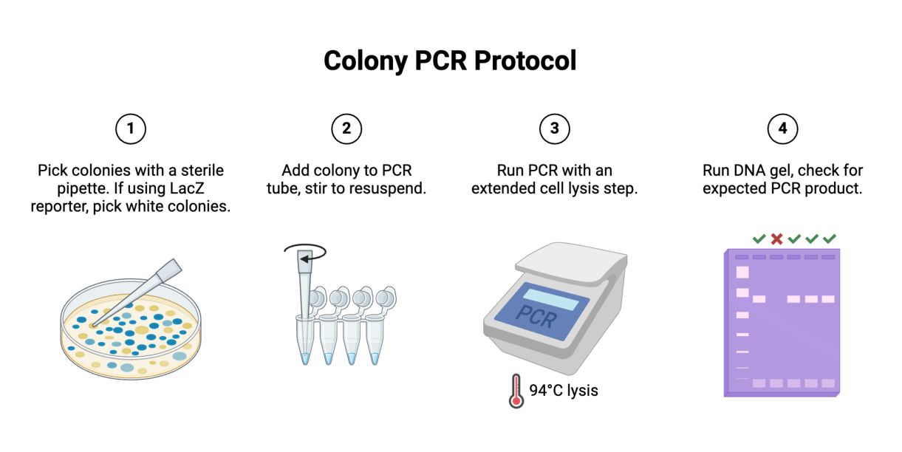
Gel Electrophoresis
1. Making Agarose Gel Purpose: creating gel mold for DNA samples from colony PCR to quantify DNA fragment size.
Procedure:
1) Determine powder amount for 1% (100 mL, 1g Agarose powder)
2) Tare the erlenmeyer & weight 1g powder
3) Using a graduated cylinder, measure out 100mL 1X TAE buffer, and pour into the erlenmeyer.
4) Swirl the flask and stop the opening with paper towels.
5) Microwave the flask in 30 sec increments, swirling with a heat-glove in between each
increment. Continue until the solution is clear.
6) Allow solution to cool (not solidify), assemble gel mold and stoppers
7) Once cool to touch, add 10 uL (for 100 mL) SYBR safe-DNA dye
8) Pour into agarose mold, wait until completely firm
2. Running Gel Electrophoresis Purpose: quantify colony PCR DNA fragment samples’ size.
Procedure:
1) Pour TAE buffer into the gel mold before removing stoppers and comb
2) Gently slide the gel into the tank, with wells facing the negative cathode.
3) Add just enough 1X TAE buffer to cover the gel
4) Mix samples of DNA with the 6X loading dye, diluting it to 1X (sample volume/6X)
5) Slowly load 10ul sample mixture into the slots of the submerged gel
6) Close the lid and attach electrical leads to corresponding cathodes.
7) Apply a constant voltage of 50-120 V (used 80V, raised to 120V) for 10-40 minutes (ran for approx. 30 min).
8) Continue gel until bands migrate about 50-70% through the gel.
9) Slide gel onto visualizing bluegel transilluminator to visualize bands.
Gel Results (in order A,B,C)

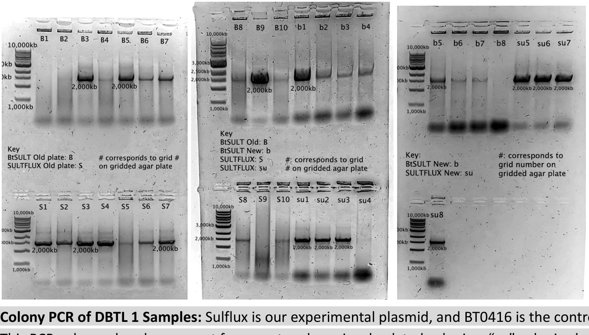
Chart of Samples:
| 1 | 2 | 3 | 4 | 5 | 6 | 7 | 8 |
|---|---|---|---|---|---|---|---|
| DNA LADDER | B1 | B2 | B3 | B4 | B5 | B6 | B7 |
| DNA LADDER | S1 | S2 | S3 | S4 | S5 | S6 | S7 |
| 1 | 2 | 3 | 4 | 5 | 6 | 7 | 8 |
|---|---|---|---|---|---|---|---|
| DNA Ladder | B8 | B9 | B10 | b1 | b2 | b3 | b4 |
| DNA ladder | S8 | S9 | S10 | Su1 | Su2 | su3 | Su4 |
| 1 | 2 | 3 | 4 | 5 | 6 | 7 | 8 |
|---|---|---|---|---|---|---|---|
| DNA Ladder | b5 | b6 | b7 | b8 | su5 | su6 | su7 |
| DNA Ladder | su8 |
Bacterial Growth and Induction
Growth Conditions and IPTG/Allolactase
Gene-positive cultures of streaked bacteria were inoculated overnight at 350 rpm and 37°C, reaching an OD600 of 1.0 (cultures that overgrew were diluted to reach the density). These inoculations were spiked into larger liquid cultures at a ratio of 1:100 (v/v) and shaken at 150-200 rpm and 37°C, till cultures reached an OD600 of 0.4–0.8, indicating logarithmic phases of growth (usually within 2- 4 hours). At this phase, 0.7 mM isopropyl β-D-1-thiogalactopyranoside (IPTG) or 1% nonfat dry milk powder (cost-effective and resourceful allolactase supplement for insufficient IPTG) was added to disburden the lacI repressor and shift cell metabolism from growth to protein
production. Flasks were shaken for 16-18 hours at 150 rpm at 15–20°C (it was frequently the case that external lab temperatures prevented the shaker from cooling below 25°C). Cultures were then centrifuged at 15,000 × g for 10 minutes, decanted, and frozen as naked pellets at –80°C.
OD600
OD600 measures the optical density and provides information on the growth of a liquid culture.
Materials
● Cell density measuring device (OD600)
● Bacteria sample
● Polystyrene cuvettes
Procedure
1. In a standard culture of 1:100 bacteria, it takes around 2-3 hours for optical density at 600nm (OD600) to reach between 0.4-0.8. Given that during the log-growth phase, doubling takes ~30 minutes, we will take time tags every 30 minutes.
2. NanoDrop2000C accommodates a minimum of 500μl for a cuvette reading.
3. Once your culture is in the designated broth, begin to take readings every 30 minutes starting ~2 hours.

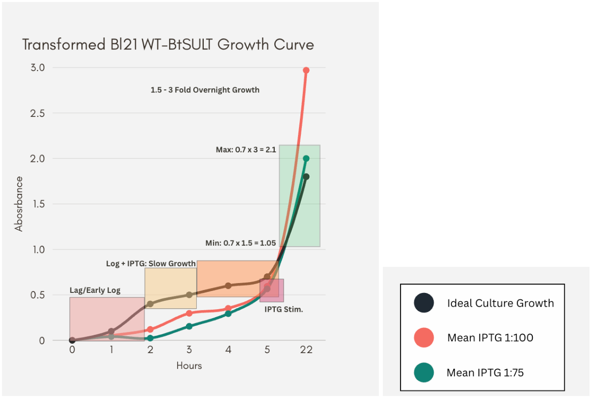
Transformed Bacterial Culture Concentrations
Purpose: Culturing BL21 cells with wildtype BT0416 plasmid DNA and transformed BL21 cells with SulFLUX plasmid DNA in TB broth for later IPTG stimulation.
Procedure:
1) Proceeding after bacterial transformation procedure. 3 ml of bacterial culture (wildtype and transformed), at 1-1.9 OD value.
2) Aliquot into three separate beakers at 1:100, 1:75, and 1:125 concentrations of culture to broth
a) 1 mL culture: 75 mL broth 1:75
b) 400 uL culture: 40 mL TB broth 1:100
c) 1.6 mL culture: 125 mL broth 1:125
3) Repeat these concentrations for other 3ml sample tube of bacteria (wt/sf)
4) Set beakers in the shaker at 37C for 15 min, at 400 rpm.
5) Place in a 4C freezer afterwards.
6) OD at various 30 minute intervals until cells reach optimal logarithmic growth (OD value of 0.6+), continue to IPTG stimulation.
IPTG Stock Preparation
Purpose: preparation of IPTG stock to use in IPTG spike stimulation of bacterial cells (sf/wt).
Procedure:
1) Add 0.2383g IPTG stock powder to 10 mL of distilled water in a 15 mL conical tube (this is considered the stock soln)
2) Pipette 50 uL of stock solution into one of the 10 mL cultures.
IPTG Spike
Purpose: Spiking bacterial cells transformed with engineered plasmid with IPTG. IPTG acts as the lab-standard equivalent for chemical allolactose, which binds to lac repressor lacI to allow for production of T7 RNA polymerase, transcribing the target gene artificially at a high rate.
Procedure:
1) Transfer bacterial culture into 50 mL conicals
2) Keep IPTG stock tube on ice, waiting until it thaws to room temperature.
3) Add IPTG at calculated amounts to each sample conical.
4) Incubate at room temp with slight oxygen allowance
5) After overnight incubation, spin down, drain supernatant, and freeze to use later.
IPTG STIMULATION CONCENTRATIONS:
- 1:100 40 mL total
- 12.5 mL sample, control
- 12.5 mL sample, 0.3 mM = 3.75 uL stock IPTG
- 12.5 mL sample, 0.7mM = 87.5 uL stock IPTG
- 1:75 75 mL total
- 23 mL sample, control
- 23 mL sample, 0.3 mM = 69 uL stock IPTG
- 23 mL sample, 0.7 mM = 161 uL stock IPTG
Sample Purification
Cell Lysis and His-Tag Purification
Cell lysis was performed on pelleted and thawed bacterial cells using non-ionic 20 mM Tris•HCl buffer at pH 7.5 (B-PER™ Bacterial Protein Extraction Reagent from Thermo Fisher #90084), including lysozyme, protease inhibitor tablets, and DNase. Lysed bacteria were then purified using Nickel-charged His-Affinity Gel [IMAC] (His-Spin Protein Miniprep Zymo Cat #P2002) and eluted using supplied elution buffer (8M urea, 250 mM imidazole, 0.1 M sodium phosphate monobasic, 0.01 M Tris, pH 4.5).
His-Pulldown
His-tag pulldown is a purification step utilizing the built in his-tag which is a short, negatively charged amino acid sequence that lets us pull our desired protein out of the cell, due to its attraction to a positively charged filter that separates it from other cellular proteins.
A. Materials
● Tagged Bacterial Cells w/ Recombinant Protein
● B-PER® Bacterial Protein Extraction Reagent
● Lysozyme 50mg/mL
● DNase I, 2500U/mL
● Buffer Table Prepared B. Procedure
Loading Buffer Requirements: The pH value of the loaded sample should be between 7.5 and 8.0. The sample should not contain higher concentrations of imidazole or histidine (OK up to 10 mM) and should be completely devoid of metal-chelating agents, such as EDTA or EGTA, and strong reducing agents such as DTT. If you are not sure what is in your sample, you can dilute the starting material with one volume of the His-Binding Buffer before proceeding with the purification process.
a. Use cold buffers and work on ice for sensitive proteins.
b. Centrifugal steps are at 15,000xg
1. Use your P1000 tip to transfer 250 μl of yellow His-Affinity Gel to the Zymo-Spin P1 column and place the column into a collection tube.
2. Spin down for 5-10 seconds and ensure that the His-Affinity Gel is completely drained.
3. Add 150-300 μl of protein sample and resuspend the gel by shaking or tapping the
column. Resuspend the gel a few more times during a two-minute incubation period.
a. If adding over 200 μl, incubate for 2 additional minutes.
4. Centrifuge the column/collection tube for 5-10 seconds. Discard the flow-through and place the column back in the collection tube.
5. Add 250 μl of His-Wash Buffer and resuspend the gel.
6. Centrifuge for 5-10 seconds. Do NOT discard flow-through.
7. Repeat steps 5 & 6, then discard the collection tube.
8. Place the Zymo-Spin P1 column into a standard microcentrifuge tube. Add 150 μl of His-Elution Buffer to the column and resuspend.
9. Centrifuge for 5-10 seconds to elute the purified protein

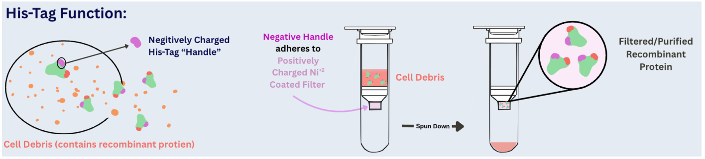
Protein Quantification and Characterization
Bicinchoninic Acid Assay Quantification
Eluted protein and crude lysate samples were both quantified using BCA Quantification in a 96-well plate and read at 595 nm. Dilution curve wells were made with Bovine Serum Albumin (BSA), with 8 dilution-standardized samples ranging from 2000ug/mL to 15.625ug/mL of BSA. Standard wells were made in the buffers for each sample: elution buffer and lysis buffer, respectively. A working reagent containing Cu2+ ions is added to the samples, so that peptide bonds in the protein undergo chelation and form Cu+ in the alkaline environment. These ions react with bicinchoninic acid (BCA) to form a purple-colored complex that absorbs light around 562 nm and provides a means of quantification.
Samples were run in duplicate, where the absorbance was plotted against a standard curve of absorbance versus concentration (R2 = 0.95) to determine sample concentration (ug/mL).

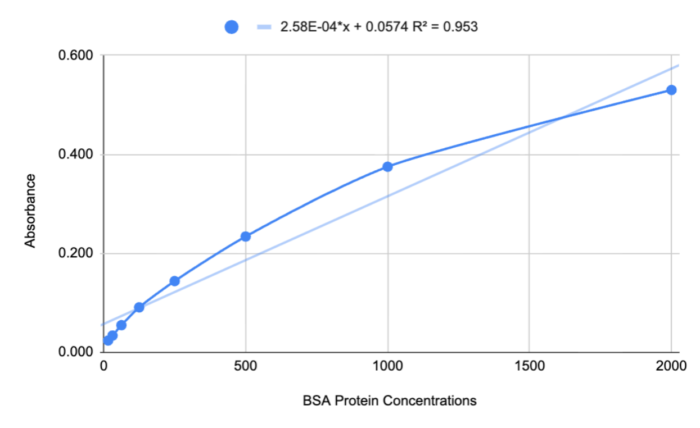
BCA Quantification
Bicinchoninic quantification is a colorimetric method used to measure protein concentration, where the binding of bicinchoninic acid to the electrons exposed by denatured proteins produces a color change quantified with a spectrophotometer.
Materials
● Microplate reader @480nm
● 96 well-plate microplate (transparent)
● Piece BCA Protein Assay Kit
○ Working Reagent A
○ Working Reagent B
● Bovine Serum Albumin (BSA) powder
● Protease inhibitor tablet
● B-PER solution
● PBS
● DNase
● Lysozyme
● Protein sample
Procedure
1. Make CBLB
a. In 50 mL of B-PER solution
b. Combine 2uL DNase, 2uL lysozyme, B-PER, protease inhibitor tablet
c. 50mL B-PER 100 µL DNase and Lysozyme 1 PI Tablet
2. Create BBB
a. In a 15mL conical combine 1mL of PBS and 1mL of CBLB
3. Make stock solution of BSA (40mg/mL)
a. In a 15mL conical tubes, combine 0.5g of BSA powder and 12.5mL of PBS
4. Make working solution of BSA (2mg/mL)
a. In a 2mL tube combined 50uL of BSA stock and 1mL CBLB
5. Get eight 2mL tubes and label them A-H
6. Create standards
a. Add 200uL of BSA working solution into tube A
b. Add 100uL of BBB to tubes B-H
c. Take 100uL from tube A and add to tube B. Mix thoroughly.
d. Take 100uL from tube B and add to tube C. Mix thoroughly. Continue serial dilutions until all standards are made (until tube H)
7. Map out plate layout on 96 well sheet paper
8. Load triplicates of every standard and sample into plate reader
9. Add 20uL of each standard to 3 wells in microplate
10. Add 20uL of each sample to 3 wells in microplate
11. Make Working Reagent (WR) within 15-30 minutes of use (due to light sensitivity and reactiveness)
a. Use 50mL conical tube covered in foil or tube rack covered in foil to block out light
b. 1:50 ratio of Reagent A to Reagent B, vortex to dissolve blue precipitate
c. Cover plate with tinfoil to shield plate from light while working
12. Add 200uL of WR to every standard and sample well (not blank background wells)
13. Add 220uL of BBB buffer to 3 wells
14. Remove tinfoil and incubate plate at room temperature for 5 minutes. Read plate within 30 minutes
15. Measure the absorbance at 480nm on a plater reader.

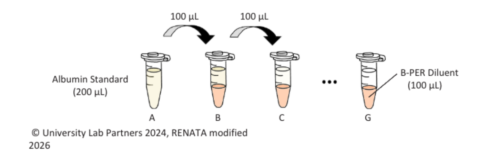
BCA RESULTS: 8/6

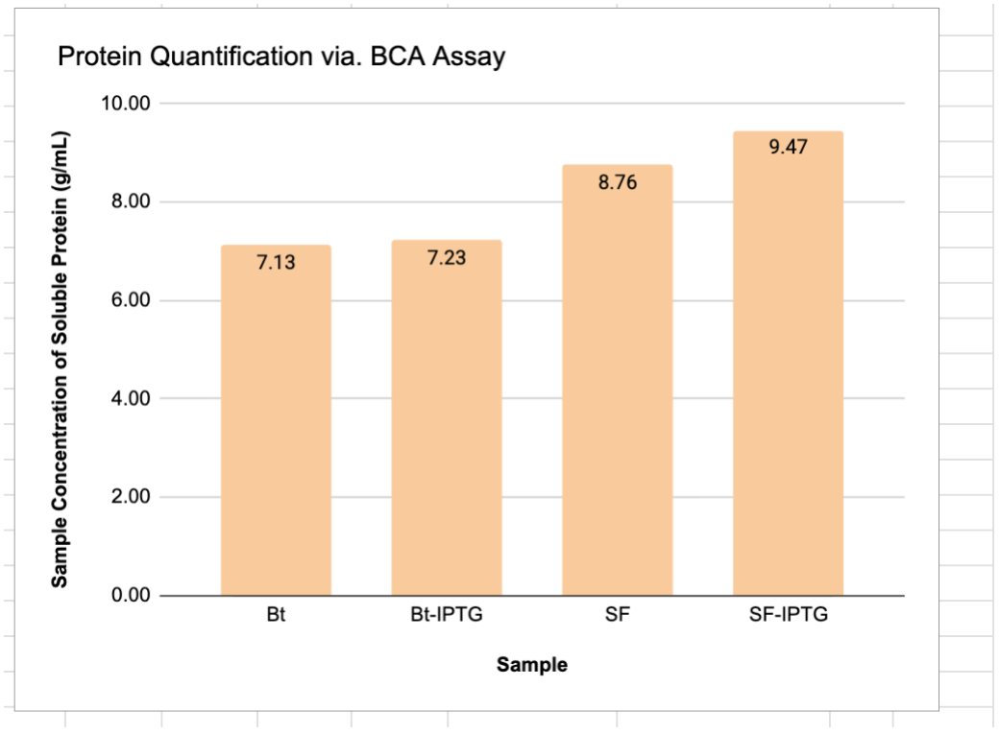
Comparative Protein Sample Concentrations: 8/6

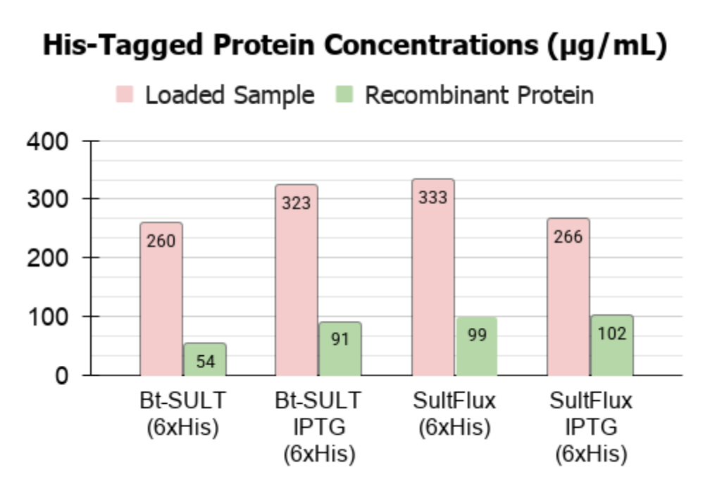
SDS-PAGE (Sodium Dodecyl Sulfate–Polyacrylamide Gel Electrophoresis)
Sodium Dodecyl Sulfate–Polyacrylamide Gel Electrophoresis (SDS-PAGE)
We used SDS-PAGE to compare a protein's migration distance against a known molecular weight ladder from 250 kilodaltons (kDa) to 10 kilodaltons (kDa).
Used to separate proteins primarily by molecular weight. When combined with Coomassie Blue staining, it allows visualization of protein bands to evaluate protein expression, estimate molecular weight, and assess relative purity before and after His-tag purification.
Materials
● Protein Samples
● Reducing Agent (β-mercaptoethanol, Dithiothreitol, Bolt)
● Chilled 1× Tris-Glycine-SDS Running Buffer
● mPAGE Precast SDS-PAGE Gel
● Laemmli Sample Loading Buffer (LDS Bolt)
● Unstained Protein Ladder
● Mini Gel Tank and Power Supply (BioRad)
● Coomassie Brilliant Blue R-250 Aqueous
● Coomassie Destaining Solution
● Deionized Water
● Microcentrifuge Tubes
● Micropipettes and Gel-Loading Tips
● Heat Block set @95o C
● Ice Bucket
● Gel Staining Container
● Orbital Shaker
2. Procedure
1. Record the identity and order of every sample loaded into the gel.
2. Use the appropriate PPE when handling chemicals.
3. Follow the manufacturer's instructions for the precast gel and electrophoresis equipment.
Part I: Sample Preparation
Calculate 50-100ng of protein samples per well.
1. (**For 100ng) Add 10 µL of reducing agent and 25 µL of Laemmli sample loading buffer to a microcentrifuge tube.
2. Add estimated µL’s of protein per sample tube.
3. Close the tube securely and heat the sample at 95°C for 5 minutes.
Part II: Gel Preparation
5. Open the precast gel packaging and remove the comb carefully. Make sure to remove straight out.
6. Remove the green tape and protective sealing tape from the bottom of the gel cassette.
7. Open the gel holder by pulling the green handles apart.
8. Insert the gel cassette into the holder, ensuring that the wells face inward.
9. If running a single gel, install the appropriate buffer dam on the opposite side. If running two gels, install the second gel cassette.
10. Place the assembled holder into the mini gel tank.
11. Add 1× Running Buffer to the inner chamber until the wells are covered. Ensure there’s no leakage. Then fill the outer chamber appropriately.
12. Gently flush the wells with running buffer using a micropipette to remove residual storage solution and debris.
Part III: Sample Loading
14. Using a P10 micropipette with gel-loading tips, withdraw the prepared protein sample.
15. Carefully guide the tip into the appropriate well without puncturing the gel.
16. Slowly dispense the sample into the well.
17. Repeat for all samples, using the recorded loading order.
18. Load 50 µL of unstained protein ladder into the designated well.
19. Record the identity of each sample, control, and ladder position before running the gel.
RENATA Sample Layout:
HT - Hit-tag Purified Samples
W - Whole Protein
● Gel 1 — 10/17
1. Protein Ladder
2. SF3 HT (IPTG+)
3. SF3 W (IPTG+)
4. SF3 W (Milk Stim.)
5. SF3 HT (Milk Stim.)
6. SF2 W (IPTG+)
7. SF2 HT (IPTG+)
8. SF2 W (Milk Stim.)
9. SF HT (Milk Stim.)
● Gel 2 — 10/17
1. Protein Ladder
2. BtSult HT (Milk Stim.)
3. BtSult W (Milk Stim.)
4. BtSult W (IPTG+)
5. BtSult HT (IPTG+)
● Gel 3 — 10/19 **NEW HT Purified Samples**
1. Protein Ladder
2. 1AB (IPTG+)
3. 1AB (Milk Stim.)
4. — LDS Blank
5. 2AE (IPTG+)
6. 2AE (Milk Stim.)
7. 3BE (IPTG+)
8. — LDS Blank
9. — LDS Blank
10. — LDS Blank
● Gel 4 — 10/19 **OLD HT Purified Samples**
1. Protein Ladder
2. — LDS Blank
3. 1AB (IPTG+)
4. — LDS Blank
5. 2AE (IPTG+)
6. 2AE (Milk Stim.)
7. 3BE (IPTG+)
8. — LDS Blank
9. — LDS Blank
10. — LDS Blank
(Confirm that these sample identities and induction conditions match the samples actually prepared.)
Part IV: Running the Gel
20. Close the electrophoresis tank and connect it to the power supply.
21. Set the voltage, current, power, and duration according to the validated settings for the specific gel system.
22. Start the electrophoresis run.
23. Confirm that the system is operating and that bubbles are visible near the electrodes.
24. Monitor the migration of the tracking dye and stop the run when the dye has migrated sufficiently toward the bottom of the gel.
Original settings: 300 V, 75 mA, 25 W, and 30 minutes.
Slower settings: 100 V, 75 mA, 25 W, and 1-1.5 hours.
Part V: Coomassie Blue Staining
25. Carefully remove the gel from its cassette and transfer it into a suitable staining container.
26. Add approximately 55 mL of deionized water, or enough to cover the gel.
27. Gently agitate at approximately 40–50 rpm, then discard the rinse water.
28. Repeat the water rinse three times.
29. To prepare the staining solution, add 0.10 g of Brilliant Blue R-250 powder to a glass beaker containing 45 mL of methanol.
30. Stir until the powder has dissolved and no visible clumps remain.
31. Add 10 mL of glacial acetic acid, followed by 45 mL of deionized water, and stir for 1–2 minutes.
32. Filter the solution through Whatman No. 1 filter paper into a suitable, labeled storage bottle.
33. Add approximately 50–60 mL of staining solution to cover the gel completely.
34. Agitate gently and allow the gel to stain for 1–2 hours or overnight, as needed.
(Handle methanol and glacial acetic acid according to laboratory safety procedures and the relevant safety data sheets. Prepare and use the staining solution with appropriate ventilation and protective equipment.)
Part VI: Destaining
Destaining Solution: Methanol 200mL, Deionized Water 160 mL, Acetic Acid 40 mL
35. Transfer the stained gel into the appropriate destaining solution.
36. Agitate the gel at approximately 40–50 rpm for 30 minutes.
37. Replace the destaining solution as needed and continue destaining until the background becomes sufficiently clear to distinguish the protein bands.
38. Document the final gel image for analysis. (e.g. Odyssey CLx/White light)
3. Reading and Interpreting the Gel
1. Compare the migration distance of the sample bands with the protein ladder to estimate their molecular weights.
2. Identify bands near the expected molecular weight of the target protein.
3. Compare induced and uninduced samples to evaluate whether IPTG induction is associated with increased target-protein expression.
4. Examine the number and intensity of bands to assess the sample's apparent purity and relative protein abundance.
5. Look for smearing or unexpected bands that may indicate sample degradation, overloading, or the presence of additional proteins.
6. Save the gel image and document the observations for each sample.
Thin Layer Chromatography (TLC)
Thin-layer chromatography (TLC) is a fast, low-cost analytical technique used to separate non-volatile mixtures. It relies on a thin stationary phase (such as silica gel coated on a glass or plastic plate) and a liquid mobile phase (solvent) that travels up the plate via capillary action.
Thin-Layer Chromatography (TLC) Protocol
Materials
Lithocholic Acid (LCA) (1 mM), Thermo Fisher, Catalog No. 11-102-2967
PAPS, Thermo Fisher, Catalog No. 78243
HEPES (50 mM) reaction buffer
Silica TLC-Gypsum plates, MilliporeSigma, Catalog No. 1003900001
Phosphomolybdic acid (PMA) ***SUBSTITUTED FOR ACETIC ACID/UV VISUALIZATION***
SulFlux Protein Sample
BtSULT Protein Sample
Magnesium chloride (MgCl₂)
1× PBS (10mM)
Chloroform
Methanol
Acetic acid
Deionized Water
Ethanol
Beakers, Micropipettes and pipette tips, Pencil and ruler
Microfuge tubes
Part I: Preparation of Enzyme Reactions
Label the enzyme reaction tubes according to the reaction conditions.

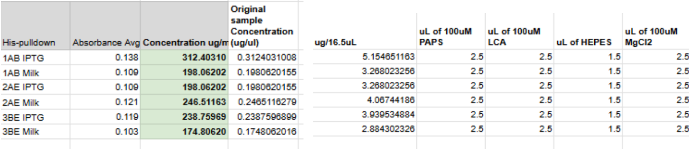
Prepare the enzyme reaction mixtures using the appropriate combinations of enzyme, LCA, buffer (1× PBS or HEPES), MgCl₂, and PAPS, as indicated in the original protocol.
Part II: Solvent Preparation
Prepare the chloroform and methanol solvent mixture.
1. Add 115 mL’s of chloroform (3.25 mL)
2. Add 42.5 mL’s of methanol.
3. Add 26.5 mL of acetic acid to 16 mL of water and swirl.
4. Pour solvent in beaker to less than 1 cm in height-- must be shorter than pencil drawn line.
Pour the prepared developing solvent into a beaker to a depth of less than 1 cm, ensuring that the solvent level remains below the pencil line used for spotting the TLC plate.
Part III: Spotting the TLC Plate
Draw a pencil line approximately 1 cm from the bottom of the silica TLC plate. Label each lane sequentially to keep track of the samples.
1. Spot with a micropipette 2uL’s of each sample reaction onto the pencil line.
2. Allow each spot to dry completely.
3. Repeat the spotting process as needed to concentrate each sample, allowing the spots to dry between applications.
Part IV: Developing the TLC Plate
1. Place the spotted TLC plate into the developing chamber containing the solvent.
2. Ensure that the solvent level is below the pencil baseline and the sample spots.
3. Allow the solvent front to travel up most of the plate.
4. Remove the plate from the chamber and allow it to dry completely.
Part V: Staining and Quantifying Results
1. Prepare the phosphomolybdic acid (PMA) staining solution using PMA and ethanol, bringing the solution to the required final volume.
2. Briefly dip or spray the TLC plate with the staining solution.
3. Allow the plate to dry completely.
4. Examine the stained plate and quantify the results based on the observed spots.

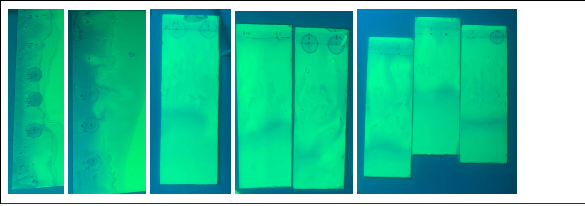
References
Adrianza, R. (2026). Education | University Lab Partners. University Lab Partners.
B-PERTM bacterial protein extraction reagent. (2026). Thermofisher.Com.
https://www.thermofisher.com/order/catalog/product/90084
Cass, O.W, Cowen, A.E, Hofmann, A.F, & Coffin, S.B. (1975). Thin-layer chromatographic separation of sulfated and nonsulfated lithocholic acids and their glycine and taurine conjugates. Journal of Lipid Research, 16 (2), 159–160.
https://doi.org/10.1016/S0022-2275(20)36743-2
GSL Biotech LLC. (2023). pET-28a(+) sequence and map. SnapGene.
https://www.snapgene.com/plasmids/pet_and_duet_vectors_(novagen)/pET-28a(%2B)
His-Spin Protein Miniprep. (n.d.). Zymo Research.
Shenekji, J. (2024). Using skimmed milk as a low-cost alternative to IPTG in plasmid expression induction (LacZ promoter) V1.
https://doi.org/10.17504/protocols.io.j8nlk81z6l5r/v1
Zhao, X., Liu, Z., Sun, F., Yao, L., Yang, G., & Wang, K. (2022). Bile acid detection techniques and bile acid-related diseases. Frontiers in Physiology, 13.